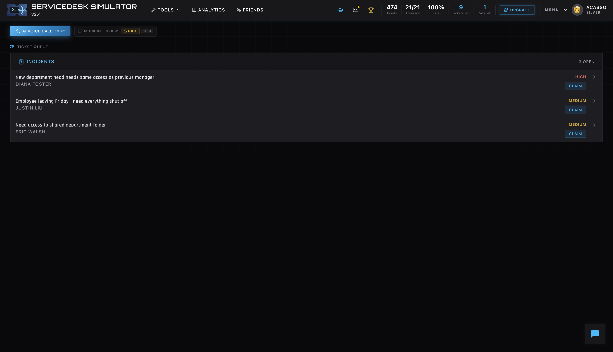
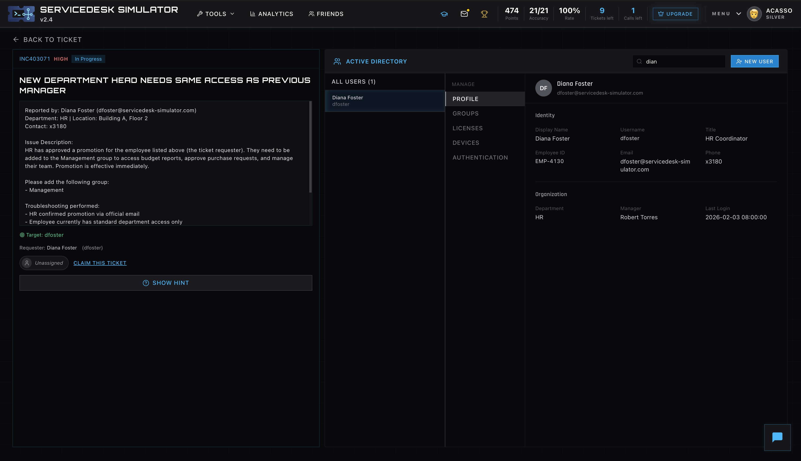
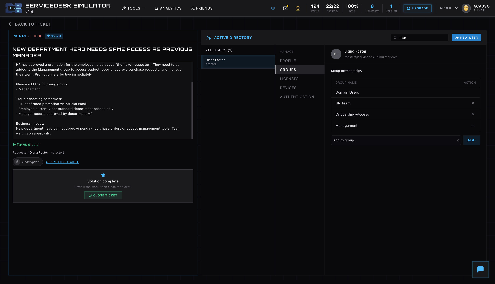

Work examples / Labs & simulations
Hands-on, step by step.
Account administration and support workflows, documented as I work through them. These screenshots come from a Windows lab and ServiceDesk Simulator.
01 / Windows lab
Identity & access administration
A provisioning exercise covering account creation, security group membership, and directory review.
- Environment
- Windows · Active Directory Users and Computers
- Focus
- User accounts, security groups, and directory structure

Create the account
Created a user in Active Directory Users and Computers and configured password options as part of an account provisioning exercise.
Open full-size screenshot
Assign a security group
Used the Select Groups dialog to assign a user to a security group and practice group-based access administration.
Open full-size screenshot
Review the directory
Reviewed domain groups and related objects to confirm the available groups and directory structure.
Open full-size screenshotWhat this demonstrates
Familiarity with the directory tools and account workflows used in IT support and systems administration.
How it connects to my work
I also administer Active Directory user accounts in my current campus IT role at Mather Splendido.
02 / Support simulation
An access request, through resolution.
A new department head needs access associated with their role. The scenario follows the ticket from queue review to a documented access change.
- Environment
- ServiceDesk Simulator · Simulated user directory
- Workflow
- Review request → Check user → Update group → Document

Review the request
Selected a high-priority incident in which a new department head needed access associated with the previous manager.
Open full-size screenshot
Check the user and access
Reviewed the employee profile, department, and current access alongside the request before making a change.
Open full-size screenshot
Update group membership
Added the management group in the simulated directory to address the department head’s access request.
Open full-size screenshot
Document and close
Recorded the access change and its reason in the resolution notes, then closed the simulated ticket.
Open full-size screenshotWhat this demonstrates
Structured ticket handling, user and access review, and resolution notes that explain the change.
Working through the whole request
The screenshots follow one scenario across four stages, including the final ticket documentation.
03 / Professional experience
Juniper Mist & campus networking
At Mather Splendido, I configure and troubleshoot wireless access points, Ethernet switches, and switch ports. My work includes diagnosing connectivity issues and converting voice ports to data connectivity for computers and laptops.
See my current responsibilitiesContinue the conversation
Let’s talk systems & networks.
Explore my current role or get in touch about an opportunity.